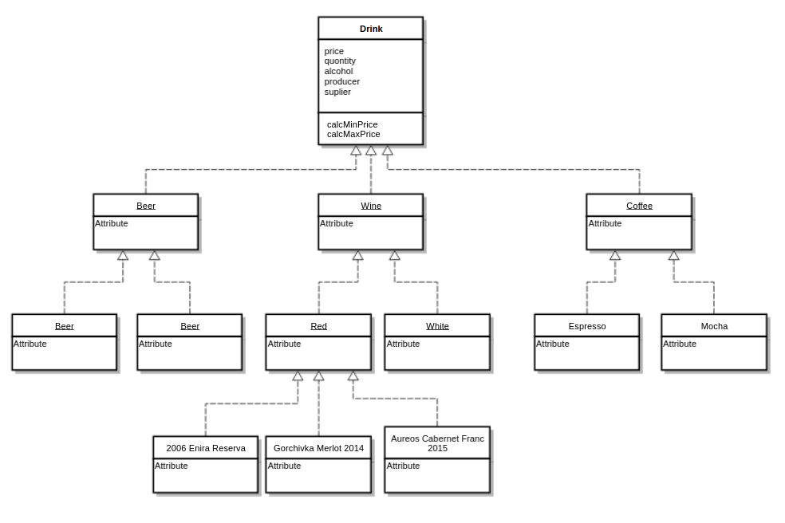

OOP Intro. Inheritance in JavaScript
Created for
Created by

OOP in a nutshell
OOP in a nutshell
Overview
{kind=link}
A classic definition of Object Oriented Programming paradigm is the one given by Grady Booch (1991) Object-oriented design: With Applications. p. 35
A method of implementation in which programs are organized as cooperative collections of objects, each of which represents an instance of some class, and whose classes are all members of a hierarchy of classes united via inheritance relationships
Basic OOP Concepts
- Object
- An Object is a unique entity which contains properties (data, state) and methods (functions that work on that data)
- Class
- A Class is a blueprint of an objects. A template for creating different objects of same type (i.e. same properties and methods).
- Note that in JavaScript, there are no classes, and objects are created by object prototypes, not classes.
- Encapsulation
- The idea of wrapping properties and methods within a single unit (an object).
- Inheritance
- A mechanism to derive class/object from another class/object. Inheritance is designed to centralize the common functionality of many different objects and thus to achieve code reuse.
- More readings Object-oriented_JS @mdn
Pros
- Real-World Modelling
- Support and Maintenance
- Structured (code for big systems)
Class-based vs. Prototype-based OOP paradigms
- Class-based paradigm
- Objects are instanses of classes
- Classes inherit from classes
- Classes are immutable
- Prototype-based paradigm
- Objects are instanses of objects
- Objects inherit from objects
- Objects are mutable
Note that JavaScript is a language which implements the Prototype-based OOP paradigm
OOP in JavaScript
| Java | JavaScript |
|---|---|
| Classes | Functions |
| Constructors | Functions |
| Methods | Functions |
Tables excerpt from Douglas Crockford's "Classical Inheritance in JavaScript"
Classical (class-based) Inheritance vs. Prototypal Inheritance - Overview
Classical (class-based) Inheritance vs. Prototypal Inheritance - Overview
Classical (class-based) Inheritance
- Classes inherits from classes!
- Objects are just instances of classes!
{kind=link}
Classical (class-based) Inheritance
- The inheritance is based on copies! I.e. when a child class inherits its parents members, they are actually copied to the child class.
- The Cons?
- Gorilla / Banana problem
- Tight Coupling Problem
- Duplication by Necessity Problem
Prototypal Inheritance
- Objects inherits from objects!
- There are no classes!
{kind=link}
- The inheritance is based on a prototype chain! As a result, each child will be able to access by reference its prototype.
- Pros?
- Changing prototype definitions dynamically!
Object prototype
Object prototype
intro
- In JavaScript every object is build on the top of a prototype object, from which it inherits all properties and methods.
var car = {};
console.log('The car object: ');
console.dir(car);
The Object object (i.e. the object created by Object constructor) does not have prototype. You can think of it as the God of all objects.

the __proto__ property
- By ECMAScript standard, every object has the [[Prototype]] property, which points to its prototype.
- Most JavaScript engines gives direct access to the [[Prototype]] property by the special property
__proto__. - From ES2015 the
__proto__property is part of the standard!
var car = {};
console.dir(car.__proto__);
// Object
console.dir(car.__proto__.__proto__);
// null
the prototype property
- When a function is created, the JavaScript engine creates a new, empty object which is associated with that function object through the function
prototypeproperty. - The role of the
prototypeproperty will be discussed in next slides.
__proto__ vs. prototype
- Do not mix the
__proto__withprototypeproperties - Every object has the
__proto__property. - Only function objets has the
prototypeproperty
Let's got deep - what's in a object?
Let's got deep - what's in a object?
at Object Literal
var car = {};

at Constructor (what does it do?)
var Car = function(){};
var ford = new Car();
var BMW = new Car();

at Factory
var carFactory = function(){ return {} }
var ford = carFactory();
var BMW = carFactory();

Factory vs Constructor
function CarConstructor(){};
CarConstructor.prototype.sayHello=()=>
console.log(`Hello from CarConstructor.prototype`);
function CarFactory(){ return {} };
CarFactory.prototype.sayHello=()=>
console.log(`Hello from CarFactory.prototype`);
var constructedCar = new CarConstructor();
var fabricatedCar = CarFactory();
constructedCar.sayHello();
//Hello from CarConstructor.prototype
fabricatedCar.sayHello();
//TypeError: fabricatedCar.sayHello is not a function
The Object.create() method
syntax
- The Object.create() method creates a new object, using an existing object as the prototype of the newly created object.
Object.create( prototype_object [, propertiesObject] );
prototype_object- the prototype for the new object.propertiesObject- an object, describing the properties for the newly created object. The syntax is like thepropsobject in Object.defineProperties() methodreturn- new object with the specified prototype object and properties (if given ).
example
var car = {
sayHello:()=>console.log(`Hello, I'm car literal`),
};
var ford = Object.create(car);
ford.sayHello();
// Hello, I'm car literal
console.log(ford.__proto__ === car);
// true
example
var car = {
drive : function(){
console.log(`Driving with ${this.speed} km/h`);
},
speed: 100, // a default value for all objects created by "car"
};
var ford = Object.create(car, {
speed: {
value: 200,
writable: false,
}
});
ford.drive();
// let's try to change the speed
ford.speed = 300;
console.log(`ford.speed: ${ford.speed}`);
Prototypal Inheritance in JavaScript
Prototypal Inheritance in JavaScript
The Prototype Chain
- Each JavaScript object has a prototype object (accessed by the
__proto__property.) - An object "inherits" - i.e. has access to all members of its prototype.
- An object prototype is just an object, so it can also have prototype from which to inherit from.
- This is known as the prototype chain!
Prototypal Inheritance of Object Literals using '__proto__' - example
// create 'car' object
const car = {
manufacturer: undefined,
speed: 100,
drive: function(){
if (this.wings >= 2){
console.log(`Flying with ${this.speed} km/h`);
}else{
console.log(`Driving with ${this.speed} km/h`);
}
}
}
// create the 'ford' object
const ford = {
manufacturer: "Ford",
speed: 200,
// make 'ford' to inherit from 'car'
__proto__ : car,
}
// create 'theFordOfPesho' object
const theFordOfPesho = {
wings: 2,
speed: 300,
// make 'theFordOfPesho' to inherit from 'ford'
__proto__ : ford,
}
car.drive();
ford.drive();
theFordOfPesho.drive();
- Be careful when using
__proto__ - Prototype_mutation on MDN
- Do not use
__proto__outside of object literals!
Prototypal Inheritance of Object Literals using '__proto__' - diagram
Prototypal Inheritance of Object Literals using Object.create() - example
// create 'car' object
const car = {
manufacturer: undefined,
speed: 100,
drive: function(){
if (this.wings >= 2){
console.log(`Flying with ${this.speed} km/h`);
}else{
console.log(`Driving with ${this.speed} km/h`);
}
}
}
// create 'ford' and make it to inherit from 'car'
const ford = Object.create( car, {
manufacturer: {value: "Ford"},
speed: {value: 200},
})
// create 'theFordOfPesho' and make it to inherit from 'ford'
const theFordOfPesho = Object.create(ford, {
wings: {value: 2},
speed: {value: 300},
})
car.drive();
ford.drive();
theFordOfPesho.drive();
Prototypal Inheritance of Object Literals using Object.create() - diagram

- Yes, the diagram is identical with the one with '
__proto__' - It's better and safe to use
Object.create()aproach, instead of '__proto__'
Prototypal Inheritance of constructed objects
// define Car Constructor:
function Car() {
this.manufacturer = undefined;
this.speed = 100;
}
Car.prototype.drive = function () {
if (this.wings >= 2){
console.log(`Flying with ${this.speed} km/h`);
}else{
console.log(`Driving with ${this.speed} km/h`);
}
}
// define Ford Constructor:
function Ford(speed) {
this.manufacturer = "Ford";
this.speed = speed;
}
// Make Ford objects to inherit from Car.prototype:
Ford.prototype = Object.create(Car.prototype);
// create a Ford object
let ford = new Ford(200);
// create another Ford object, and attach wings to it:
let fordOfPesho = new Ford(300);
fordOfPesho.wings = 2;
// let's use the object:
ford.drive();
fordOfPesho.drive();

Prototypal Inheritance with Class Syntax
- Reference: Classes @MDN
Prototypal Inheritance with Class Syntax - examples
// define Car Class:
class Car{
constructor(speed){
this.manufacturer = undefined;
this.speed = speed;
}
//using shorter syntax for method definitions:
drive(){
if (this.wings >= 2) {
console.log(`Flying with ${this.speed} km/h`);
} else {
console.log(`Driving with ${this.speed} km/h`);
}
}
}
// define Ford Class, which will inherits from Car:
class Ford extends Car{
constructor(speed) {
// call the Parent Constructor first:
super(speed);
this.manufacturer = "Ford";
}
}
// create a Ford object
let ford = new Ford(200);
// create another Ford object, and attach wings to it:
let fordOfPesho = new Ford(300);
fordOfPesho.wings = 2;
// let's use the object:
ford.drive();
fordOfPesho.drive();
Exercises
Exercises
createCatConstructor:
Solutions
Solutions
createCatConstructor
// Animal constructor
const Animal = function(name, food){
this.name = name;
this.food = food;
}
// Animal methods
Animal.prototype.eat = function(){
console.log(`${this.name} is eating ${this.food}`);
}
// Create a Cat Constructor, which will inherit all methods from Animal:
// <<<<< your code start here
const Cat = function (name, food) {
// reuse parent constructor
Animal.call(this,name,food);
}
// inherit all parent's methods
Cat.prototype = Object.create(Animal.prototype);
// >>>>> your code ends here
// create tom object:
const tom = new Cat('Tom', 'cheese');
// use tom:
tom.eat();
// expected output:
// Tom is eating cheese
These slides are based on
customised version of
framework